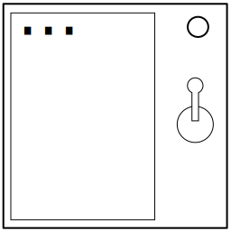

Бред сумасшедшего
Ничего. Совсем ничего. Пусто. Пустой экран.
- На экране будет появляться текст.
- Найдите точно такой же текст и соответствующее ему действие в таблице ниже.
- Установите переключатель в положение "вниз", когда на таймере будет первая из двух цифр.
- Установите переключатель в положение "вверх", когда на таймере будет вторая из двух цифр.
| Экран | Действие |
| ← ← → ← → → | 5/4 |
| 1 3 2 4 | 3/2 |
| СТРЕЛКА ВЛЕВО СЛОВО ВЛЕВО СТРЕЛКА ВПРАВО СЛОВО ВЛЕВО СТРЕЛКА ВПРАВО СЛОВО ВПРАВО | 5/8 |
| ПУСТО | 1/3 |
| СОВСЕМ ПУСТО | 1/5 |
| ГОСПОДИ ВО ИМЯ - ДИСПЛЕЙ ТОЛЬКО ЧТО ПОМЕНЯЛСЯ, Я НЕ ЗНАЛ, ЧТО ЭТОТ МОД ТАК МОЖЕТ. ПРО ЭТО НАПИСАНО В ИНСТРУКЦИИ? | 8/7 |
| НИКОЛАЙ ЕЛЕНА ТАТЬЯНА ПРОБЕЛ, СЕМЁН ОЛЬГА ВАСИЛИЙ СЕМЁН ЕЛЕНА МИХАИЛ ПРОБЕЛ НИКОЛАЙ ИВАН ЧАЙКА ЕЛЕНА ГРИГОРИЙ ОЛЬГА | 0/7 |
| ТРИ СЛОВА СИМВОЛ ВОПРОСИТЕЛЬНЫЙ ЗНАК | 9/9 |
| ХОРОШО ДИКТУЮ СИМВОЛ СТРЕЛКА ВЛЕВО ДВА РАЗА ПОТОМ СЛОВА ВПРАВО ВЛЕВО ВПРАВО ПОТОМ СИМВОЛ СТРЕЛКА ВПРАВО | 6/0 |
| ВОПРОС ВОПРОС | 8/6 |
| СТРЕЛКА ВЛЕВО | 6/8 |
| СЛОВО ВЛЕВО | 7/0 |
| ПОГОДИ ЗДЕСЬ НИЧЕГО НЕТ | 1/9 |
| СЕМЬ СЛОВ ПЯТЬ СЛОВ ТРИ СЛОВА СИМВОЛ ВОПРОСИТЕЛЬНЫЙ ЗНАК | 0/5 |
| ФРАЗА СЛОВА ЗНАК ВОПРОСА ДВА РАЗА | 9/1 |
| ПРЕДЛОЖЕНИЕ СЛОВО НИЧЕГО | 2/7 |
| ОДИН ТРИ (2) (ЧЕТЫРЕ) | 3/9 |
| МЫ ВЗОРВАЛИСЬ | 4/2 |
| Экран | Действие |
| НЕТ ПРАВДА? | 5/2 |
| ← ВЛЕВО → ВЛЕВО → ВПРАВО | 5/6 |
| ОДИН А ПОТОМ 3 (2) 4 | 4/7 |
| ЗНАК ВОПРОСА ДВА РАЗА | 7/6 |
| ВЛЕВО | 6/9 |
| ГОСПОДИ ВО ИМЯ ВСЕГО СВЯТОГО ВОПРОСИТЕЛЬНЫЙ ЗНАК ВОПРОСИТЕЛЬНЫЙ ЗНАК? | 9/0 |
| 1 3 (ДВА) В СКОБКАХ 4 | 4/1 |
| СТОЙ ЗАБУДЬ ВСЁ ЧТО Я СКАЗАЛ, ДВА СЛОВА ПОТОМ ДВА СИМВОЛА ПОТОМ ДВА СЛОВА: ← ← ВПРАВО ВЛЕВО → → | 1/6 |
| ЧЕТЫРЕ СЛОВА ОДИН ТРИ (2) (ЧЕТЫРЕ) (ЧЕТЫРЕ) НАПИСАНО В СКОБКАХ | 4/0 |
| СОВСЕМ НИЧЕГО | 1/4 |
| НЕТ, СОВСЕМ НИЧЕГО | 2/5 |
| ПУСТОЕ МЕСТО | 1/6 |
| ОДИН ТРИ ДВА ЧЕТЫРЕ | 3/7 |
| ОНО НИЧЕГО НЕ ПОКАЗЫВАЕТ | 2/3 |
| СЕМЁН ИВАН МИХАИЛ ВАСИЛИЙ ОЛЬГА ЛЕОНИД ПРОБЕЛ СЕМЁН ТАТЬЯНА РОМАН ЛЕНА ЛЕОНИД КОНСТАНТИН АННА ПРОБЕЛ ВАСИЛИЙ ЛЕОНИД ЕЛЕНА ВАСИЛИЙ ОЛЬГА | 1/2 |
| ОДИН 3 2 4 | 3/4 |
| ЗНАК ВОПРОСА? | 7/4 |
| ?СИМВОЛ ЗНАК ВОПРОСА | 8/1 |
| НЕТ ПРАВДА ЗНАК ВОПРОСА | 5/1 |
| 1 3 (ДВА) 4 | 2/0 |
| 1 3 2 (ЧЕТЫРЕ) | 1/0 |